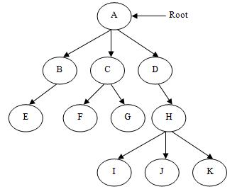

04 힙(Heap) - 트리(Tree) 구조의 대표적인 데이터 구조
1. 트리란?
트리란 소위 말하는 수형도(樹型圖)를 떠올리면 이해하기 쉽습니다. 리스트에서와 마찬가지로 하나의 데이터 영역을 일컫는 용어로 ‘노드(Node)'를 사용합니다. 특히 리스트에서의 Head 노드와 같은 역할을 하는 것을 트리에서는 그 근간을 두었다 하여 ’루트 노드(Root Node)'라고 합니다.

2. 힙이란?
트리는 하나의 데이터 노드가 여러 개의 데이터 노드를 참조할 수 있는 형태입니다. 알고리즘을 고안하기 위해서는 규칙성 있는 데이터 구조여야 하기 때문에 트리의 근본적인 구조를 계승하여 새로이 데이터 구조를 고안했은데, 그것이 바로 힙입니다. 힙은 완전이진트리 구조라고 하는, 하나의 노드는 반드시 두 개의 자녀 노드(그 노드가 직접적으로 참조 가능한 노드)를 가지며, 마지막 부모 노드는 하나의 자녀 노드만 가져도 되는 구조의 하나입니다.
그리고 힙은 단순한 완전이진트리와 구별되는 특징이 있습니다. 바로 Min 힙과 Max 힙으로 구분되는데, Min 힙의 경우 부모 노드는 자녀 노드보다 항상 작은 값을 가져야 하는 특징을 가지며, Max 힙은 그와는 반대로 부모 노드가 자녀 노드보다 항상 큰 값을 가져야 하는 구조적 특징을 가집니다. 이 때 두 자녀 노드 간의 대소 관계는 Min 힙, Max 힙 모두 관계없습니다.
이 프로그램에서는 최소 3개, 최대 31개의 노드를 생성할 수 있습니다. 사용 도중에 메시지 상자에 숫자를 입력할 때, 그것이 바로 노드들의 데이터 값을 부여하는 행위가 됩니다.
3. 힙의 원리
힙은 기본적으로 완전이진트리이기 때문에 부모 노드와 자녀 노드 간의 왕래가 자유롭습니다. 이를테면 자녀 노드의 번지수를 s라고 합시다. 이 자녀 노드를 통해 그 자녀의 부모 노드로 접근할 수 있는데, 이것은 s/2의 연산을 통해 가능합니다. 만약 s가 왼쪽 자식 노드라면 짝수 번째일 것이고, 오른쪽 노드라면 홀수 번째일 것입니다. 그런데 기본적으로 컴퓨터에서 연산하는 정수의 나눗셈은 몫을 구하기 때문에 두 자녀 중 어느 것을 s번째라 하여도 그들의 부모 노드로 접근이 가능합니다.
반면 부모 노드의 번지수를 p라고 할 때, 자녀 노드로의 접근은 p*2의 연산을 통해 가능합니다. 그러나 이 자녀는 항상 왼쪽 자식을 가리킵니다. 만일 오른쪽 자식을 참조하고 싶을 때에는 p*2+1의 연산을 취해주면 됩니다.
완전이진트리를 Min 힙 또는 Max 힙의 형태로 구축하는 과정을 거쳐야 비로소 힙이라고 할 수 있습다. 이러한 과정을 위한 작업이 바로 'Shift Up(상향 이동)‘과 ’Shift Down(하향 이동)‘ 입니다. Shift Up의 경우에는 데이터를 추가함과 동시에, 즉 데이터를 입력하면서 Min/Max 힙의 형태로 그 때 그 때 구축하는 시행을 말합니다. 반면 Shift Down은 데이터 추가 과정이 모두 끝난 후에 Min/Max 힙의 형태로 구축하는 시행을 말합니다. 이러한 시행들은 부모 노드와 자녀 노드 중 가장 작거나(Min) 큰(Max) 노드와 크기 비교를 하여 바꾸거나 바꾸지 않는 작업을 거칩니다.
데이터를 바꾸는 작업을 거쳤을 때, Shift Up 과정에서는 부모 노드의 위치를 다시 자녀화 하여, 새로이 자녀 노드가 된(원래의 부모 노드) 노드의 부모 노드와 크기 비교를 거치면서 루트 노드에 이를 때까지 이 과정을 거칩니다. 이러한 원리 때문에 'Shift Up'이라는 이름이 붙게 되었습니다. Shift Down 과정에서는 반대로, 자녀 노드의 위치를 다시 부모화 하여, 새로이 부모 노드가 된(이전의 자녀 노드) 노드의 자녀 노드와 크기 비교를 거치면서 마지막 자녀 노드에 이를 때까지 이 과정을 거칩니다. 이 과정이 끝난 후에는 Shift Down 과정이 일어나기 직전에 지정된 노드의 바로 이전 노드(형제 노드)로 옮겨 가면서 다시 비교 및 교환 과정을 반복합니다. 이렇게 부모 노드의 위치가 하향하는 모습을 통해 'Shift Down'이라는 이름이 붙게 되었습니다.

Shift Down 과정입니다. 현재 노드의 위치가 바뀌고 부모 노드는 가장 아래 계층의 노드로 되었습니다.


Shift Up 과정입니다. 붉은 색은 노드의 선정을, 파란색은 교환이 이루어졌음을 의미합니다.
대개 힙을 설명하는 그림은 위와 같은 형태로 주어집니다. 그러나 실제 코드를 보면 1차원 배열을 이용하기 때문에 그림과 상당히 매치가 되지 않을 수 있습니다. 따라서 이러한 점을 보완하여 이 프로그램에서는 힙의 기능이 작동하는 동안 몇 번 노드가 어떻게 되었는가에 대한 과정을 간략히 표시해 주면서 이해를 돋우고 있습니다.
Shift Down의 경우에는 부모 노드가 내려가는 형태로 작동하기 때문에 부모 노드 위치를, Shift Up의 경우에는 자녀 노드가 올라가는 형태로 작동하기 때문에 자녀 노드 위치를 표시하였습니다.
4. 용어 정리
| 용어 | 의미 |
|---|---|
| 노드(Node) | 데이터를 가지고 있는 영역 |
| 부모와 자녀 | 부모 노드와 자녀 노드는 상대적인 개념으로, 대개 하단에 있는 것이 자녀 노드이며 상단에 있는 것이 부모 노드이다. |
| Min, Max |
Min 힙 : 부모 노드의 데이터 값이 자녀 노드의 데이터 값보다 항상 작음 Max 힙 : 부모 노드의 데이터 값이 자녀 노드의 데이터 값보다 항상 큼 |
| Shift Up | 트리를 구축함과 동시에 Min/Max힙의 조건을 충족시켜나가는 과정. 데이터 생성과 함께 그 데이터는 마지막 자녀 노드가 되며, 그 자녀 노드를 통해 참조 가능한 부모 노드와 데이터 값을 계속 비교해나가면서 Min/Max 힙을 구축해 나감. |
| Shift Down | 트리를 모두 구축한 후, Min/Max 힙의 조건을 최후에 충족시키는 과정. 마지막 부모 노드부터 차례대로 자녀 노드와 값을 비교해 나가며 힙을 구축한다. |
| 힙 정렬(Heap Sort) | 구축된 힙의 루트 노드와 최후 노드를 바꾸어 Shift Down을 반복하는 과정. 한 차례의 Shift Down이 끝날 때마다 최후 노드는 점점 하나씩 줄어든다. 이를 통해 오름차순(Min) 또는 내림차순(Max) 정렬이 가능하다. |
5. 예제
14개의 수로 이루어진 수열 {13, 50, 62, 0, 1,22, 7, 79, 3, 46, 30, 59, 100, 33}이 있다. 이것을 최대 힙과 최소 힙, 그리고 다시 Shift Down과 Shift Up 과정을 통해 힙을 구축할 때, 단계별로 어떠한 과정을 거치는지 그림으로 그려보시오. 단, Shift Down의 경우에는 트리의 형태를 구축하는 것을 제1단계로 하며, Shift Down과 Shift Up을 1회 시행하여 한 번 자리바꿈이 이루어진 상황 또한 하나의 단계로 본다.